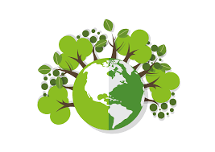

Crear un sistema automatitzat de reciclatge per a materials plàstics, utilitzant intel·ligència artificial per millorar l'eficiència.
Implementació d'una màquina intel·ligent que separi i classifiqui els diferents tipus de plàstic per a un reciclatge més efectiu.
Millorar la taxa de reciclatge de plàstics i reduir la contaminació ambiental a través de la automatització i l'ús de IA.